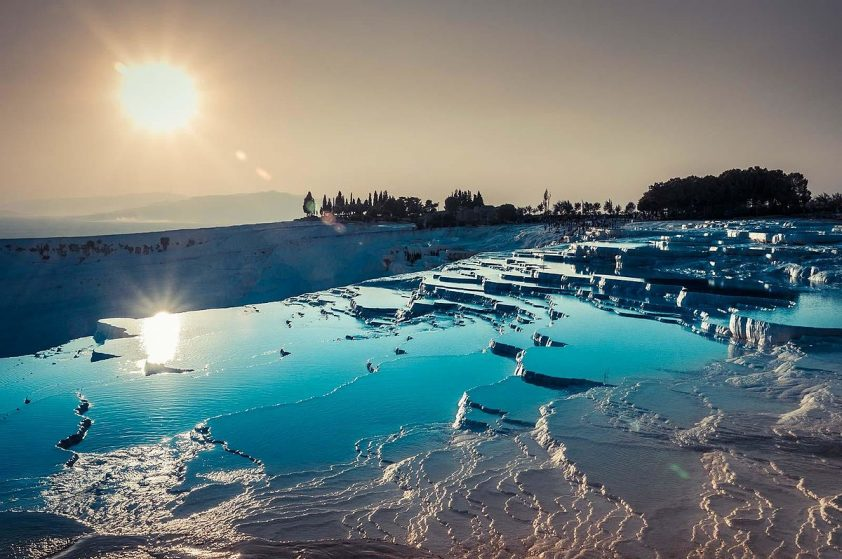

Known to the ancient Greeks as Hierapolis, Pamukkale in Turkey is one of the most surreal places on the planet. The mineral-rich waters of hot springs drip, foam and cascade down Instagram-worthy terraced pools. At the top of the mountain are the well-preserved ruins of the ancient Greco-Roman city. There, you will find a pool in which you can bathe; the same pool that was used by ancient visitors to the site.
Hierapolis is also where you can find a Ploutonion. The ancient temple of Pluto was believed to be one of the gateways to the underworld, but accessing its inner chambers is not possible, as they’re filled with deadly carbon emitted by water from the spring as it flows through a deep cleft in the rock. Hot air balloon rides are usually offered at sunrise, giving you the chance to get a bird’s eye view of one of the most beautiful places on earth.